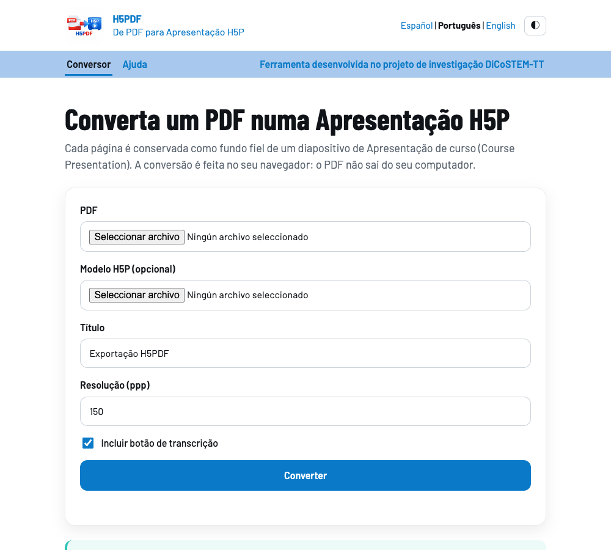
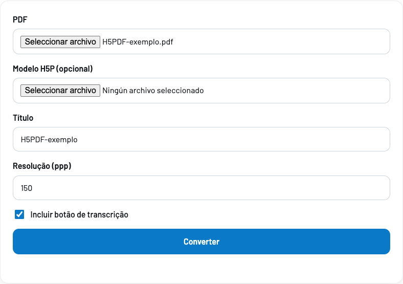
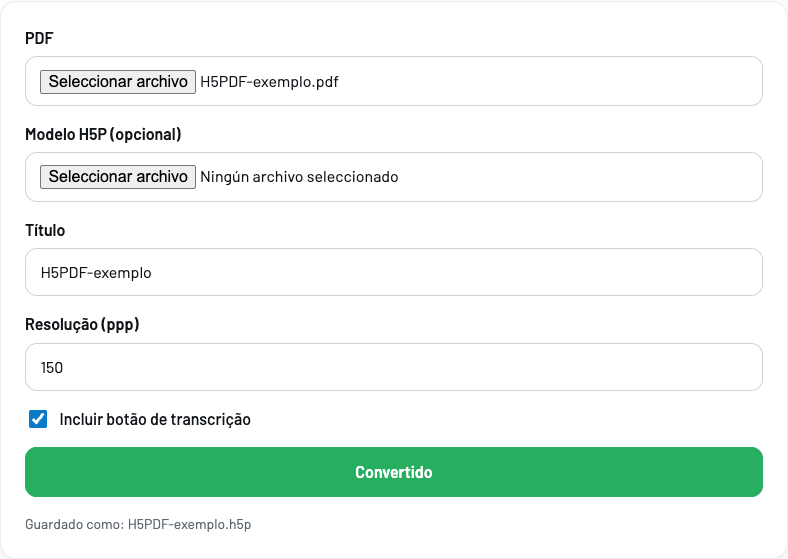
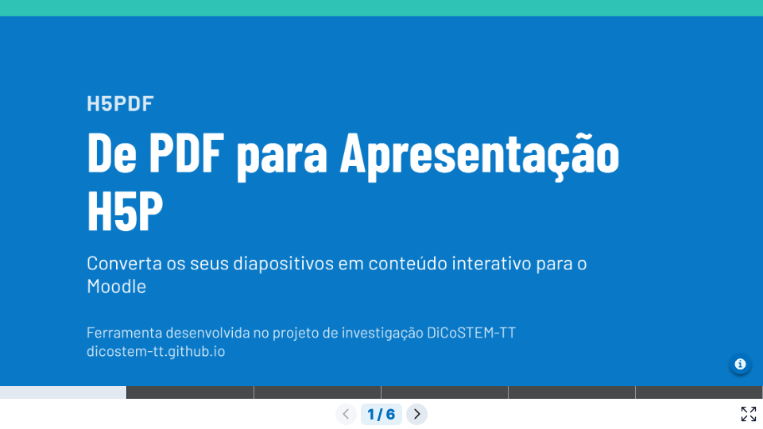
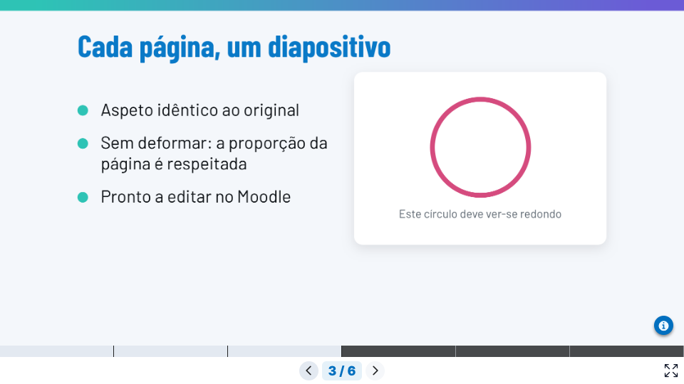
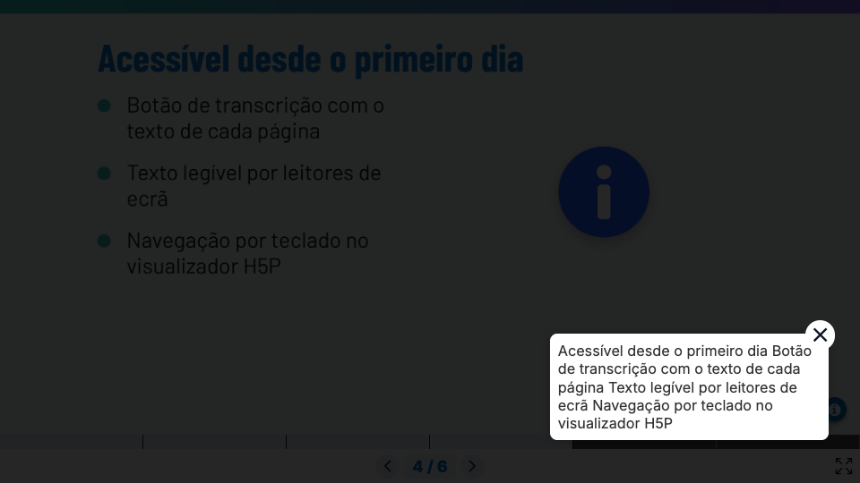

Ajuda do H5PDF
Tudo o que precisa para converter um PDF numa Apresentação H5P e utilizá-la no Moodle. Versão 0.2.0.
1. O que é o H5PDF
O H5PDF converte um PDF (por exemplo, diapositivos exportados do PowerPoint, Keynote, Google Slides ou Canva) num pacote H5P do tipo Apresentação de curso (Course Presentation). Esse pacote é carregado no Moodle, onde pode ser visto, partilhado e editado.
- Cada página do PDF transforma-se num diapositivo. A página é usada como imagem de fundo, pelo que o aspeto é idêntico ao original: tipos de letra, cores, fórmulas e desenhos mantêm-se tal como estão.
- Se o escolher, cada diapositivo inclui um botão de transcrição com o texto da página, que os leitores de ecrã conseguem ler.
- Já no Moodle, pode acrescentar sobre cada diapositivo perguntas, ligações, vídeos ou outros elementos interativos com o editor H5P.
O texto dos diapositivos não pode ser editado no Moodle, porque faz parte da imagem de fundo. Para o alterar, edite a apresentação original, exporte-a novamente para PDF e volte a convertê-la.
2. Antes de começar
- Um PDF. Serve qualquer tamanho de página; o formato panorâmico 16:9 é o que melhor aproveita o espaço. A conversão é feita no seu navegador: com apresentações muito longas em alta resolução a memória pode esgotar-se, sobretudo em tablets.
- Um Moodle com H5P. O Moodle inclui H5P desde a versão 3.9. O tipo de conteúdo Apresentação de curso tem de estar disponível no seu site (ver Utilizá-lo no Moodle).
- Opcional: um modelo. Se o seu Moodle usar versões do H5P diferentes das habituais, pode indicar um modelo exportado do seu próprio Moodle (ver As opções).
Para praticar, use a apresentação de exemplo desta ajuda: seis diapositivos que apresentam o H5PDF e que aparecem em todas as capturas de ecrã.
Transferir a apresentação de exemplo (PDF)
3. Tutorial: converter na web
-
Abra o H5PDF no navegador. Verá o formulário de conversão. Pode mudar o idioma no canto superior direito e alternar entre modo claro e escuro com o botão .

O conversor na web. -
Em PDF, carregue no botão de seleção de ficheiro e escolha o seu PDF. O texto desse botão é definido pelo navegador, no idioma dele. O Título é preenchido com o nome do ficheiro; altere-o se quiser: é o nome que a atividade terá no Moodle e o nome proposto para o ficheiro.

PDF escolhido e título proposto. -
Verifique a Resolução e a caixa do botão de transcrição. Os valores predefinidos (150 ppp, com botão) servem na maioria dos casos. Mais detalhes em As opções.
-
Carregue em Converter. Antes de começar, o navegador pergunta onde guardar o ficheiro
.h5p:- Chrome e Edge abrem a caixa «Guardar como»: escolha a pasta e o nome.
- Safari e Firefox não permitem que a página abra essa caixa e guardam o ficheiro como uma transferência normal. Para que também perguntem onde guardar, ative nas definições do navegador a opção de perguntar em cada transferência.
Se cancelar a caixa de guardar, nada é convertido.
-
Durante a conversão, o botão mostra o progresso. No fim fica verde e por baixo aparece o nome do ficheiro guardado.

Conversão concluída. -
Carregue o ficheiro no Moodle seguindo Utilizá-lo no Moodle.
4. Utilizar sem ligação
Esta versão do H5PDF funciona inteiramente no seu navegador. A página, as suas bibliotecas e o modelo são transferidos deste mesmo site na primeira vez, e o navegador guarda uma cópia.
- Depois da primeira visita pode abri-la e converter sem ligação à internet, no mesmo navegador e com o mesmo endereço.
- O reconhecimento de texto (OCR) transfere os seus modelos de idioma (cerca de 6 MB) na primeira vez que uma página precisa dele. Para o ter também sem ligação, converta antes, com ligação, algum PDF digitalizado.
- Funciona nas versões atuais do Chrome, Edge, Firefox e Safari. Se o navegador estiver em modo privado, pode não guardar a cópia.
5. As opções, uma a uma
O documento a converter. É aceite um único PDF por conversão. Não pode estar protegido por palavra-passe.
Modelo H5P (opcional)
O H5PDF inclui um modelo de Apresentação de curso que funciona na maioria dos Moodle atuais. Se, ao importar o resultado, o seu Moodle se queixar da versão do tipo de conteúdo, crie no seu Moodle uma Apresentação de curso vazia, transfira-a como ficheiro .h5p e carregue-a neste campo. Desse modelo, o H5PDF toma a versão da Apresentação de curso e a dos elementos que gera (texto e imagem), os textos da interface no idioma do seu Moodle e as suas definições, pelo que o resultado coincide com o que o seu site tem instalado. Basta fazê-lo uma vez e reutilizar o ficheiro. Se o deixar vazio, é usado o modelo incluído.
Título
Nome do conteúdo H5P e nome proposto para o ficheiro. É preenchido com o nome do PDF; pode alterá-lo antes de converter. Aceita até 255 carateres.
Resolução (ppp)
Pontos por polegada com que cada página é desenhada. Aceita valores de 72 a 600.
- 150 (predefinido): nítido em ecrãs normais e com um tamanho de ficheiro moderado.
- 200–300: para ecrãs de alta resolução, projeção em ecrã inteiro ou páginas com letra muito pequena.
- 96–120: para apresentações longas ou se o seu Moodle limitar o tamanho dos ficheiros que se podem carregar.
Duplicar a resolução multiplica aproximadamente por quatro o tamanho de cada imagem.
Incluir botão de transcrição
Acrescenta a cada diapositivo um botão redondo azul (i) no canto inferior direito. Ao carregar nele abre-se uma caixa com o texto da página. É útil para a acessibilidade (os leitores de ecrã leem-no), para copiar texto e para pesquisar. Se uma página não tiver texto, por ser uma imagem ou uma digitalização, o H5PDF reconhece-o automaticamente (OCR) em espanhol, português e inglês, dando prioridade ao idioma da interface. O reconhecimento é feito no seu navegador com o Tesseract.js; na primeira vez são transferidos os modelos de idioma (cerca de 6 MB) deste mesmo site. Reveja o texto reconhecido: pode conter erros, sobretudo em fórmulas, tabelas ou letra manuscrita.
6. O que contém o ficheiro .h5p
O ficheiro é um pacote H5P padrão com um diapositivo por página. Não leva código próprio: apenas conteúdo, pelo que o Moodle o trata como qualquer outra Apresentação de curso.

Proporções: nada é deformado
O H5P reserva a parte inferior da apresentação para a barra de navegação, pelo que o espaço disponível para cada diapositivo é um pouco mais largo do que o formato 16:9. O H5PDF coloca cada página centrada e sem deformar, e preenche as margens laterais prolongando a cor das bordas da página. Com fundos lisos ou gradientes as margens não se notam; se uma fotografia tocar a borda esquerda ou direita, verá uma faixa.
O mesmo acontece com outros formatos: numa página 4:3 as margens laterais são mais largas e, numa página mais panorâmica do que o espaço, o preenchimento é acrescentado em cima e em baixo.

O botão de transcrição

7. Utilizá-lo no Moodle
Há duas formas habituais. Os nomes exatos dos menus podem variar ligeiramente consoante a versão e o tema do seu Moodle.
Como atividade H5P de uma disciplina
Na disciplina, ative o modo de edição.
Na secção pretendida, escolha Adicionar uma atividade ou recurso → H5P.
Dê-lhe um nome, arraste o ficheiro
.h5ppara o campo do pacote e guarde.
No banco de conteúdos
Abra o Banco de conteúdos da disciplina e carregue em Carregar.
Escolha o ficheiro
.h5p. A partir daí pode reutilizá-lo em várias disciplinas ou atividades.
Acrescentar interatividade
Abra o conteúdo com Editar (no banco de conteúdos ou a partir da atividade). Cada diapositivo tem a página como fundo; use a barra de ferramentas da Apresentação de curso para acrescentar por cima perguntas, textos, ligações, imagens ou vídeos. Não apague nem mova a imagem de fundo.
Se o Moodle não reconhecer o tipo de conteúdo (por exemplo, um erro de biblioteca indisponível), a Apresentação de curso não está instalada ou está desativada no seu site. Quem administra o Moodle pode ativá-la ou atualizá-la em Administração do site → H5P → Gerir tipos de conteúdo H5P. Também pode experimentar com um modelo exportado do seu Moodle (ver Modelo H5P).
8. Conselhos para preparar o PDF
- Crie os diapositivos em formato panorâmico (16:9). É o que melhor ocupa o espaço do H5P.
- Exporte para PDF a partir da aplicação original em vez de imprimir para PDF ou digitalizar: o texto é mantido e a transcrição fica completa.
- Evite fotografias ou elementos que toquem as bordas esquerda e direita da página: é aí que o H5PDF prolonga o fundo.
- Deixe livre o canto inferior direito se for incluir o botão de transcrição.
- As animações e transições do PowerPoint ou do Keynote não passam para o PDF. Se um diapositivo se constrói em vários passos, exporte os passos como páginas separadas ou acrescente a interatividade depois no Moodle.
- Se a apresentação for muito longa, considere dividi-la: é mais cómodo de editar no Moodle e o ficheiro fica mais leve.
9. Resolução de problemas
| Mensagem ou sintoma | O que fazer |
|---|---|
| «O ficheiro não é um PDF válido» ou «O H5PDF só aceita ficheiros PDF» | Confirme que o ficheiro é mesmo um PDF e não outro formato com o nome alterado. Exporte-o novamente a partir da aplicação original. |
| «O PDF está danificado ou não pode ser aberto» | Abra-o na Pré-visualização ou no Acrobat; se abrir, guarde-o de novo como PDF e tente outra vez. |
| «O PDF está protegido por palavra-passe» | Retire a proteção (por exemplo, exportando-o de novo sem palavra-passe) e volte a convertê-lo. |
| «Não foi possível converter o PDF» | Experimente uma resolução menor ou exporte o PDF de novo. |
| «Modelo H5P inválido» | O modelo tem de ser um .h5p de Apresentação de curso exportado do Moodle. Deixe o campo vazio para usar o modelo incluído. |
| Não aparece a caixa de guardar (web) | No Safari e no Firefox o ficheiro vai para a pasta de transferências. Ative nas definições do navegador a opção de perguntar onde guardar. |
| A página web aparece sem estilos ou com um aspeto antigo | Force o recarregamento com ⌘ ⇧ R (Ctrl F5 no Windows). |
| A conversão para ou o separador recarrega sozinho | O navegador ficou sem memória. Baixe a resolução, feche outros separadores ou divida a apresentação. |
| O Moodle não importa o ficheiro | Ver o aviso de Utilizá-lo no Moodle sobre o tipo de conteúdo. |
| A transcrição está vazia ou tem erros | A página é uma imagem ou uma digitalização e o reconhecimento de texto não a conseguiu ler bem. Se puder, exporte o PDF a partir da aplicação original para que o texto venha incluído. Numa digitalização, use uma resolução de 200–300 ppp. |
10. Privacidade
- Os seus ficheiros não saem do seu computador. O PDF é processado no seu navegador e o resultado é guardado diretamente onde escolher. Nada é enviado para nenhum servidor: este site apenas fornece a página e as suas bibliotecas.
- Para funcionar sem ligação, o navegador guarda uma cópia deste site (não dos seus PDF nem dos pacotes que gera).
- A página não usa cookies nem serviços de terceiros. Apenas guarda no seu navegador se prefere o modo escuro.
- Guarda também o idioma que escolher.
11. Versão e informação
H5PDF 0.2.0. O H5PDF foi desenvolvido no projeto de investigação DiCoSTEM-TT, «Competência Digital e Educação STEM na Formação de Professores», como recurso aberto para os professores que criam materiais digitais para o Moodle. Se utilizar o H5PDF na sua docência ou numa publicação, agradecemos que mencione o projeto.
Projeto de I&D&I PID2022-140601OA-I00, financiado pelo MCIN/AEI/10.13039/501100011033/ e pelo FEDER «Uma maneira de fazer a Europa».
O código do H5PDF é distribuído com a licença Apache 2.0, e esta ajuda, as capturas de ecrã e a apresentação de exemplo, com a licença CC BY 4.0. Os logótipos institucionais do rodapé não estão incluídos nessas licenças. As bibliotecas de terceiros mantêm as suas (avisos de terceiros).
O H5P é um projeto de código aberto de h5p.org. Moodle é uma marca registada da Moodle Pty Ltd.